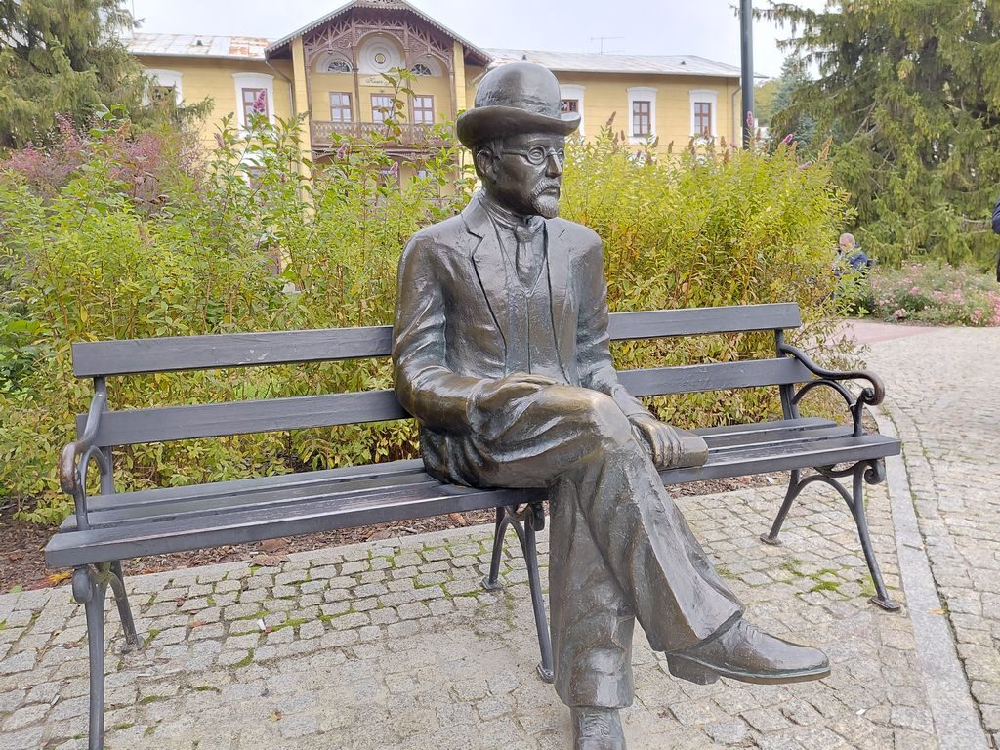
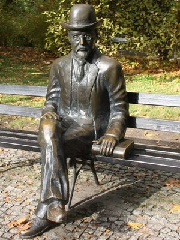
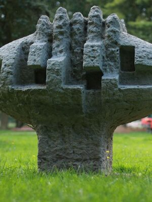
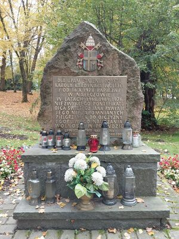
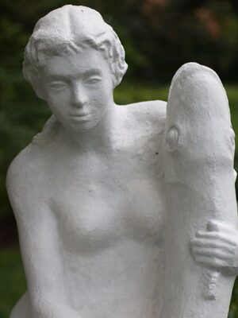
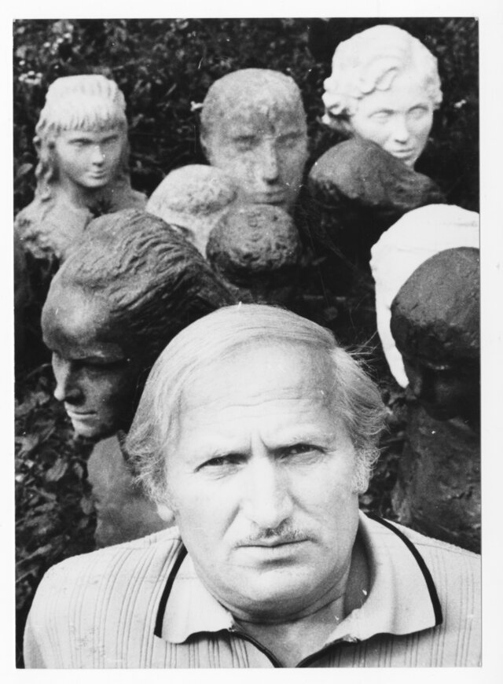
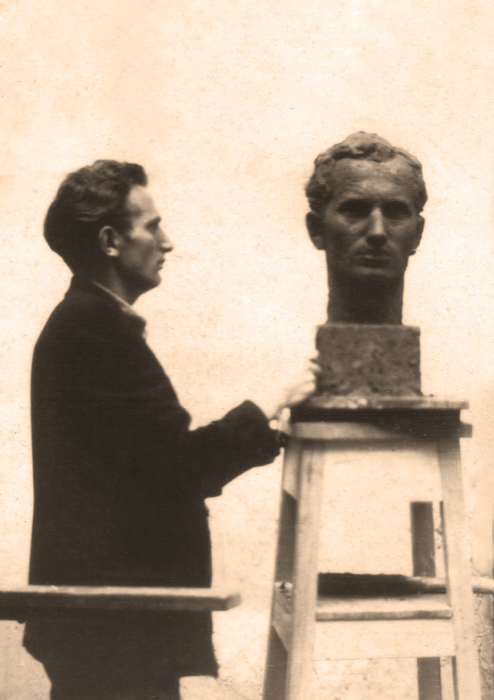
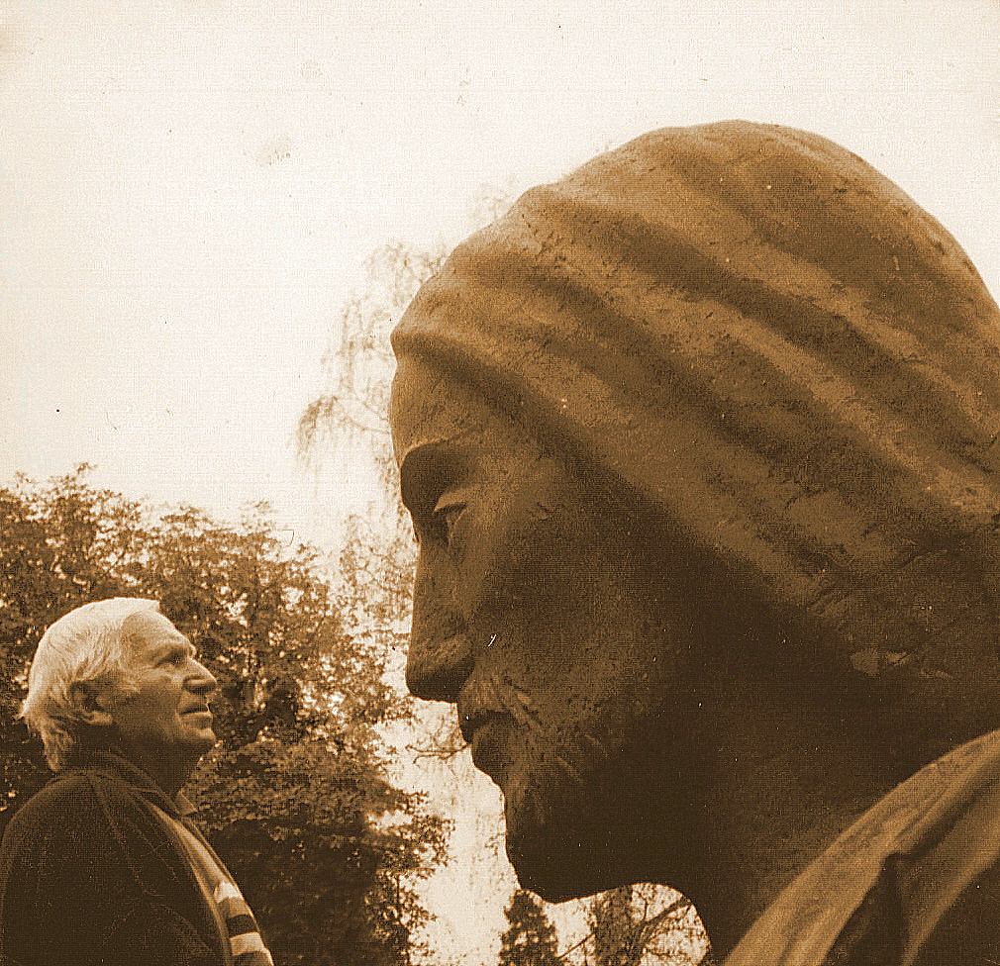
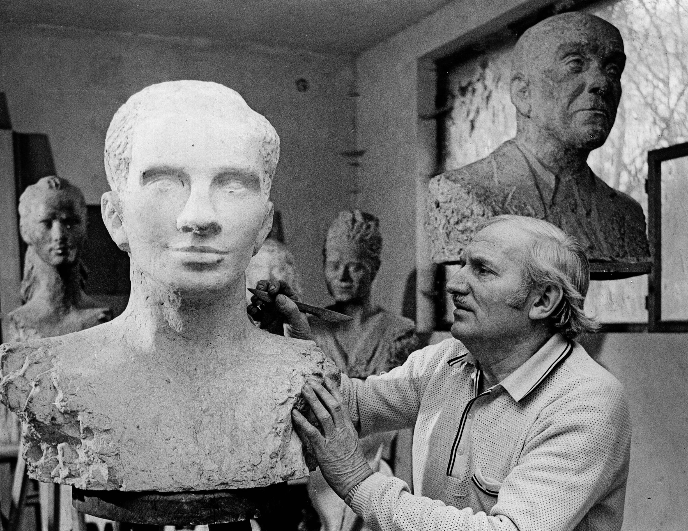

Śladami rzeźb Stanisława Strzyżyńskiego
Cztery przystanki w Parku Zdrojowym w Nałęczowie. O ojcu i jego twórczości opowiada syn, rzeźbiarz Zbigniew Strzyżyński.
4 przystanki · ok. 850 m · ok. 13 min pieszo

Ławeczka Bolesława Prusa · 2002Zanim wyruszysz
Rozwiń transkrypcję
Dzień dobry Państwu. Nazywam się Zbigniew Strzyżyński, jestem rzeźbiarzem, malarzem, a także pedagogiem, byłym wicedyrektorem do spraw artystycznych Państwowego Liceum Sztuk Plastycznych w Nałęczowie.
Jestem również prezesem Fundacji Sztuka i Dom, która powstała w celu upamiętnienia dorobku twórczego mojego ojca, artysty rzeźbiarza Stanisława Strzyżyńskiego, osoby bardzo zasłużonej dla Nałęczowa, dla Lubelszczyzny, ale także dla Polski. Dzisiaj opowiem Państwu o nim, ale także o kilku jego realizacjach znajdujących się w Nałęczowie.
Cztery przystanki, jedna opowieść

Ławeczka Prusa
Siedząca postać pisarza w meloniku, dłoń oparta na książce.

Drzewo genealogiczne
Abstrakcyjna forma — symbol więzów rodzinnych i ciągłości pokoleń.

Kamień Papieski
Pomnik i tablica przypominające o pobycie kard. Karola Wojtyły.

Panna z rybą
Rzeźba w fontannie przed willą „Pod Matką Boską”.
Jak korzystać ze spaceru
-
Wybierz punkt
Na mapie lub liście poniżej kliknij rzeźbę, o której chcesz się dowiedzieć więcej.
-
Posłuchaj opowieści
Na każdej podstronie czeka nagranie z opowieścią syna artysty, Zbigniewa Strzyżyńskiego.
-
Ruszaj na spacer
Otwórz tę stronę w telefonie i korzystaj z niej na miejscu, przechodząc od jednej rzeźby do drugiej we własnym tempie.
Zaplanuj spacer
Kliknij pinezkę na mapie, aby zobaczyć podgląd rzeźby i przejść do nagrania.
Mapa jest obecnie niedostępna. Poniżej pełna lista punktów spaceru — działa niezależnie od mapy.
Lista punktów spaceru




Stanisław Strzyżyński (1923–2015)
Młodość i wykształcenie
Stanisław Strzyżyński urodził się 3 kwietnia 1923 roku w Kaliskach (woj. wielkopolskie). Studiował na Wydziale Rzeźby Państwowej Wyższej Szkoły Sztuk Plastycznych w Poznaniu, w pracowni prof. Bazylego Wojtowicza. Dyplom uzyskał w 1955 roku w Akademii Sztuk Pięknych w Warszawie, w pracowni prof. Mariana Wnuka.
Nałęczów
Do Nałęczowa przeniósł się w 1953 roku. Przez trzydzieści lat, od 1953 do 1983 roku, pracował jako nauczyciel rzeźby w Państwowym Liceum Sztuk Plastycznych w Nałęczowie. Od 1951 roku należał do Związku Polskich Artystów Plastyków, a w latach 1957–1974 współtworzył Grupę Nałęczów. Wspólnie z malarzem Jarosławem Olejnickim, prezesem Towarzystwa Przyjaciół Nałęczowa, zorganizował ogólnopolskie plenery rzeźbiarskie: „Rzeźby parkowej” w 1975 roku oraz „Postaci Nałęczowa” w 1979 roku.
Twórczość
Dorobek artysty obejmuje dwadzieścia pomników, kilkanaście rzeźb plenerowych, około stu rzeźb portretowych, kilkadziesiąt medali, a także rzeźby sakralne i prace o tematyce martyrologicznej.
W Nałęczowie stworzył m.in. ławeczkę Bolesława Prusa, pomnik poświęcony żołnierzom Armii Krajowej poległym w walce z NKWD, pomnik Maksymiliana Kolbego, figury Matki Bożej Róży Duchownej, Chrystusa Miłosiernego i Chrystusa Frasobliwego oraz rzeźby plenerowe „Drzewo genealogiczne”, „Panna z rybą” i „Taniec dzieci”.
Poza Nałęczowem
Poza Nałęczowem Strzyżyński wykonał m.in. dwudziestotrzymetrowy pomnik Bohaterskim Lotnikom Dęblińskiej Szkoły Orląt w Dęblinie (1966), sześciometrową figurę Chrystusa Zbawiciela w Warszawie, a także pomniki w Rąblowie, Kocku, Zbędowicach i Puławach oraz ławeczki Marii Cunitz w Świdnicy, Józefa Kraszewskiego w Romanowie i Stefana Żeromskiego w Siedlcach.
Nagrody i odznaczenia
W 1967 roku, wspólnie z Juliuszem Kłeczkiem, zdobył główną nagrodę w ogólnopolskim konkursie na Pomnik Walki i Męczeństwa na Majdanku. Został odznaczony m.in. Krzyżem Oficerskim i Krzyżem Kawalerskim Orderu Odrodzenia Polski oraz Złotym Krzyżem Zasługi.
Zmarł 16 marca 2015 roku w Nałęczowie.
W czerwcu 2026 roku jedną z alei w Parku Zdrojowym w Nałęczowie nazwano jego imieniem.